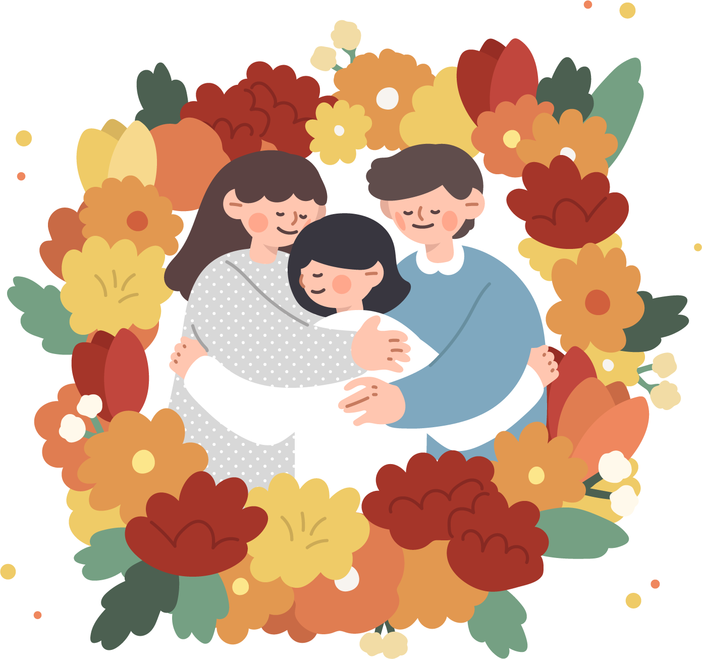

<?
include("include/head.php");
?>

<!--Title Header s-->
<header
    class="d-flex bg-white sticky-header align-content-center flex-wrap align-items-center justify-content-between  ">
    <nav class="navbar">
        <div class="container-fluid">
            <button type="button" class="btn btn-md" onclick="window.history.back()"><span
                    class="material-symbols-outlined">chevron_left</span>
            </button>
            <div class="header_title">애도심리상담</div>
        </div>
    </nav>
</header>
<!--Title Header e-->
<!--content s-->
<div class="container">
    <diV>
        <div class="body2 text-pre text-center px-4 pb-5 cl_info">
            “호상이다”
            “천국 가셨을거다”
            “산 사람은 살아야지”
            .
            .
            이런 말들이 애도를 더욱 힘들게 만듭니다.
            사람마다 애도의 기간과 깊이가 다르니까요.
            적당한 애도 기간이라는 것은 없습니다.
        </div>
        <div class="w-50 mx-auto mb-4">
            
        </div>
        <div class="pt-3 text-center">
            <div class="subtitle1">
                혹시,
                오랫동안 슬픔을 느끼고 계신가요? 
            </div>
            <div class="body1 cl_info text-pre">어떤 이야기라도 좋아요.
                판단 없는 안전한 공간에서
                당신을 기다리고 있습니다. 
            </div>
            <button type="button" class="btn btn-md btn-primary w-50 mt-4 mx-auto">무료 애도심리상담
        </button>
        </div>
    </diV>
</div>
<!--content e-->
<?
        include("include/footer.php");
        ?>